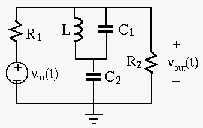
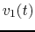
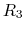
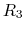

Instructions
In the circuit shown in the figure,
 ,
,  ,
,
,
,  , and the input voltage is
V. Find the output voltage
, and the input voltage is
V. Find the output voltage  across
across  . (Hint: the circuit is linear, therefore the superposition
principal applies.)
. (Hint: the circuit is linear, therefore the superposition
principal applies.)

The circuit in the figure below is composed of three resistors
, and an ideal inductor  . The current source
is 6 mA. The switch is open when
. The current source
is 6 mA. The switch is open when  and the circuit has reached steady
state. The switch is then closed at
and the circuit has reached steady
state. The switch is then closed at  .
.

| time |  | |||||||
where and and the voltage and current associated with for , respectively. Their polarities and directions are shown in the figure.
In the circuit shown in the following figure,  ,
,  ,
,
,
,  ,
,  ,
,  . The switch is in position a and
the circuit has reached steady state, until the moment
. The switch is in position a and
the circuit has reached steady state, until the moment  when the switch is
turned to position b. Determine the voltage
when the switch is
turned to position b. Determine the voltage  across  as the response
of the system to the change of position of the switch.
across  as the response
of the system to the change of position of the switch.
Hint:  is the superposition of
is the superposition of  and responding to two processes
respectively:
(a) the voltage drop across due to the initial current through
and responding to two processes
respectively:
(a) the voltage drop across due to the initial current through  alone after
the switch is turned from a to b; and (b) the voltage across as the complete
response to the current source
alone after
the switch is turned from a to b; and (b) the voltage across as the complete
response to the current source  alone after the switch turned from a to b.
alone after the switch turned from a to b.

Now solve the problem in the following steps by superposition theorem: